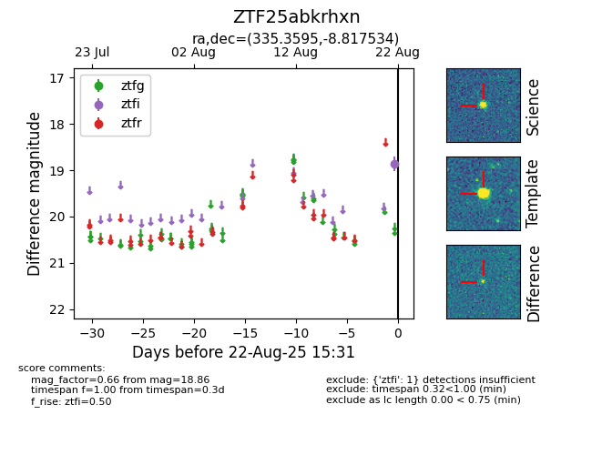

Target ZTF25abkrhxn at 2025-08-22 16:16, see:
FINK: fink-portal.org/ZTF25abkrhxn
Lasair: lasair-ztf.lsst.ac.uk/objects/ZTF25abkrhxn
ALeRCE: alerce.online/object/ZTF25abkrhxn
alt names
ZTF25abkrhxn (ztf,alerce)
coordinates:
equatorial (ra, dec) = (335.3595,-8.81753)
galactic (l, b) = (53.1087,-50.14133)
photometry
last ztfi=18.86
1 ztfi detections
